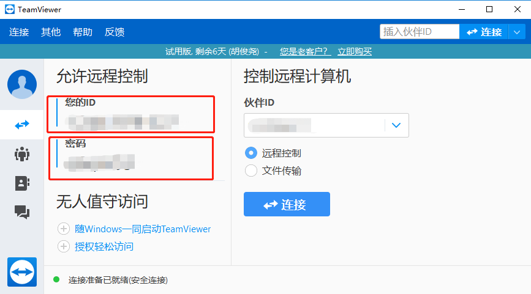

安装包内其他工具用途说明
1.WMI修复工具
WMI为Windows 32位系统的MMC和脚本对象提供了一个访问操作系统构成单元的公共接口。WMI损坏可能会导致无法安装客户端，使用此修复工具可解决该问题。
在安装包内，双击即可使用。
2.禁用.NET缓存工具
当电脑卡顿时尝试使用该工具。
在安装包内，双击即可使用。
3.网络检测工具
使用该工具检测网络状态。
在安装包内，双击即可使用。
4.远程工具
使用该工具可以远程访问另一台收银台电脑。
在安装包内，双击即可使用。
在商户或服务商授权后，我们运营、技术人员可以通过该工具远程访问收银台电脑协助解决问题。
在收银台电脑打开该工具后，请将您的ID和密码告知运营、技术人员，等待我们的远程协助。

注意：远程工具开启后的ID和密码请勿泄露，如果出现问题请立即修改密码，另外，在远程工具使用结束后请及时关闭，防止他人恶意访问。